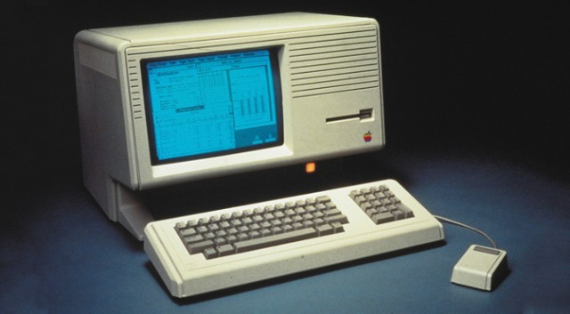
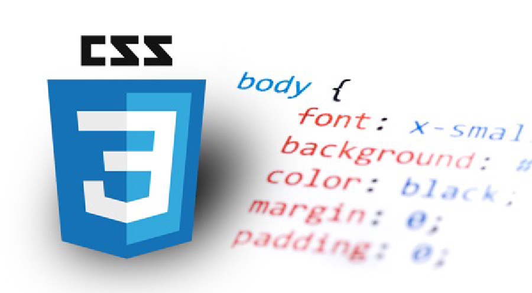

Advanced Research Projects Agency nu Defense Advanced Research Projects Agency (DARPA) is een instituut opgericht door president Dwight D. Eisenhower als reactie op de oprichting van Sputnik in Rusland. Bij ARPA is er onderzoek gedaan naar militaire, wetenschappelijke en technologische projecten. Hier hebben ze gebruikt gemaakt van de eerste versie van het internet.
1963 Hypertext
In 1963 heeft Ted Nelson de term “hypertext” en ”hypermedia” voorgesteld, de gebruiker hoeft dus alleen maar op een link te drukken om naar een andere pagina te gaan. Dit was verbonden met het ontstaan van een GUI.
1969 Ontstaan internet
Door de telefoonlijnen bestonden er al veel telefoonlijnen, deze knooppunten zijn gebruikt om het internet netwerk op te bouwen. Dit bespaarde veel geld en tijd doordat er geen nieuw netwerk te gemaakt hoeft te worden. In 1969 werd het eerste boodschap tussen 2 knooppunten verzonden.
1973 GUI

Xerox heeft in 1973 de eerste versie van een graphical user interface (GUI) ontwikkeld, deze werd niet warm verwelkomt, een aantal jaren later hebben Microsoft en Apple hun eigen apparaten uitgebracht met een GUI.
1991 Ontstaan HTML
In 1991 is de eerste versie van HTML uitgebracht door Tim Berners-Lee. De eerste versie van HTML bevatte maar 18 tags. Tegenwoordig hebben we meer tags.
1994 Ontstaan CSS

In 1994 heeft Håkon Wium Lie met Bert Bos een eigen browser gemaakt (Argo) die styles kon ondersteunen. Hierbij hadden ze ook de stylesheets ontwikkeld. Dit was de eerste versie van CSS
1995 Ontstaan JavaScript
De eerste versie van JavaScript werd door Brendan Eich van Netscape Communication Corporation ontwikkeld in 1995.
2008 Android OS
Android Inc opgericht door Andy Rubin en Rich Miner in Palo Alto in Californië in 2003. Pas 5 jaar in 2008 later is de eerste versie van Android gepubliceerd. In 2006 is het bedrijf verkocht aan Google voor 50 miljoen dollar.